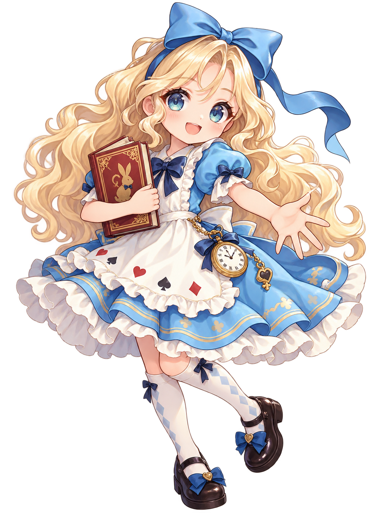
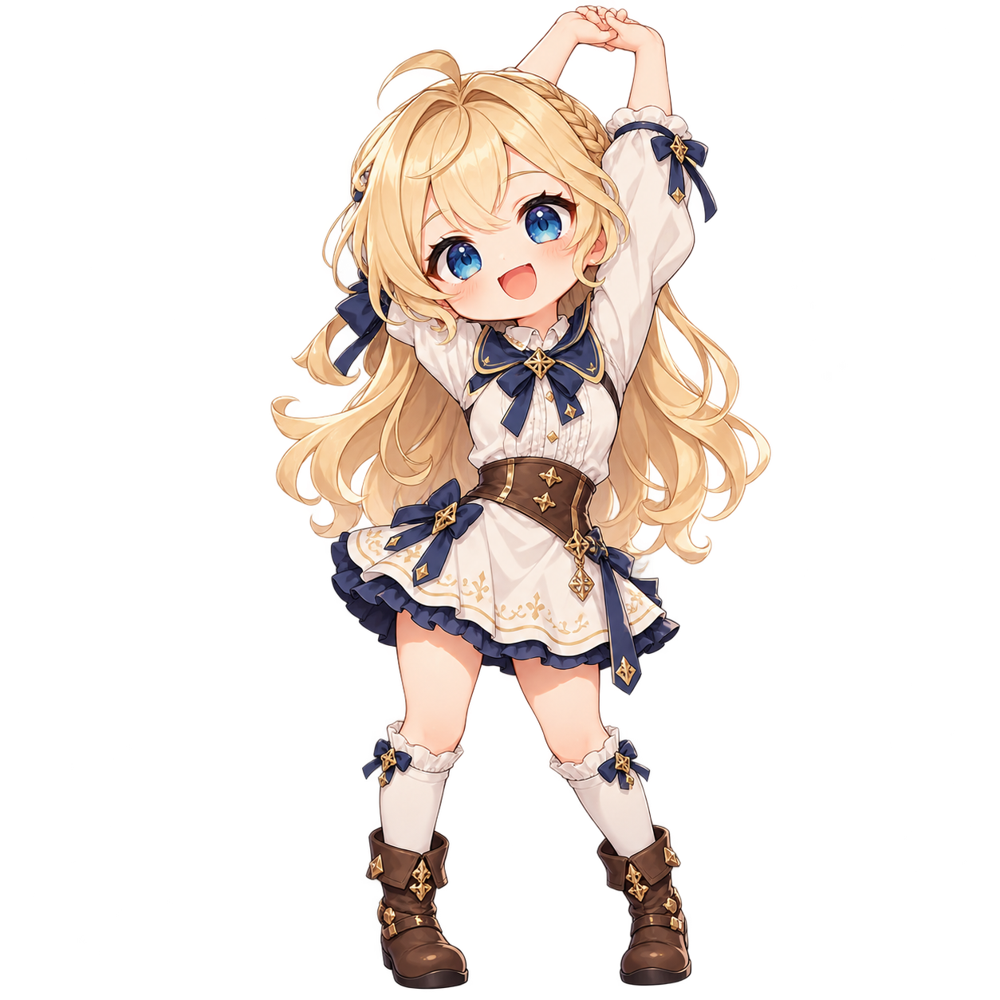
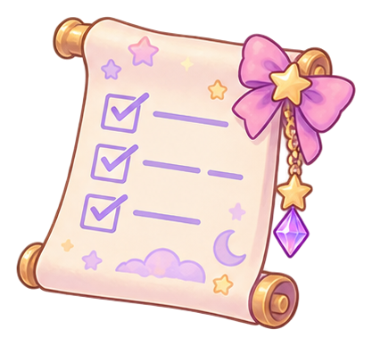

ALICE“I found a room full of whispering mirrors. They only open when multiplication is solved — and spoken!”
“First hear it. Then jump it. Then use it in fractions.”
NEW WONDERLAND CHAPTER
The Echoing Mirror Room
Today we focus on one idea: how many equal jumps turn one number into another?
FAITH · EQUIVALENT FRACTION DAY
The Echoing Mirror Path
One idea, many forms: equal jumps → multiplier → same change upstairs and downstairs.
CHAPTER 1 · SPOKEN MULTIPLICATION WARM-UP
The Whispering Number Aviary
“The room opens only when I hear the whole multiplication sentence.”
Solve one fact. Then read the complete fact aloud. For trickier facts, the noisy Wonderland birds may ask you to repeat it once.
SOLVE → SAY IT
What is the answer?
“I can only jump the same amount each time. You tell me where I land.”
“The multiplier will be the number of equal jumps — but don’t name it yet.”
MEANING BEFORE SYMBOLS
Where does Alice land?
“The denominator mirror changed. I need the same change upstairs too.”
“Find the jump downstairs. Copy the same multiplier upstairs.”
GUIDED
Find the denominator jump

A TRUE LITTLE BREAK
Alice’s Little Stretch Break
No math right now. Alice needs a tiny rest too.
STATION 1
Fix the missing number
OPTIONAL GEOMETRY DESSERT · GRADE 4
Alice’s Garden Tiles
The garden has two jobs: plant every square inside, then build ribbon fence around the outside.
“Inside is area. Around is perimeter. Let’s discover both with the same garden.”
QUEST 1 · AREA
Cover the inside

EXIT SNAPSHOT
What can Faith do now?
Correctness matters, but support level matters too.
Student Question 1 · multiplier
Student Question 2 · equivalent fraction
Teacher support tracker
I Independent · V Visual support · T Teacher prompt
TODAY’S ADVENTURE COMPLETE
The Mirrors Remember Your Jumps
The goal was not speed. It was learning what the multiplier means: how many equal jumps reach the target — then using that same change upstairs and downstairs.